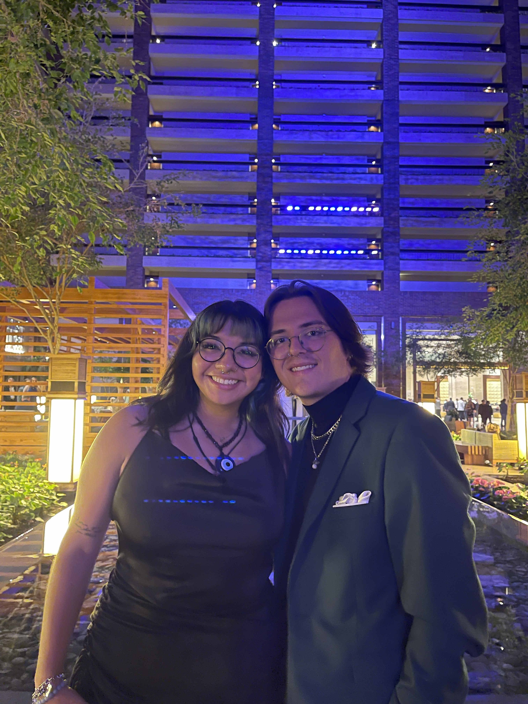
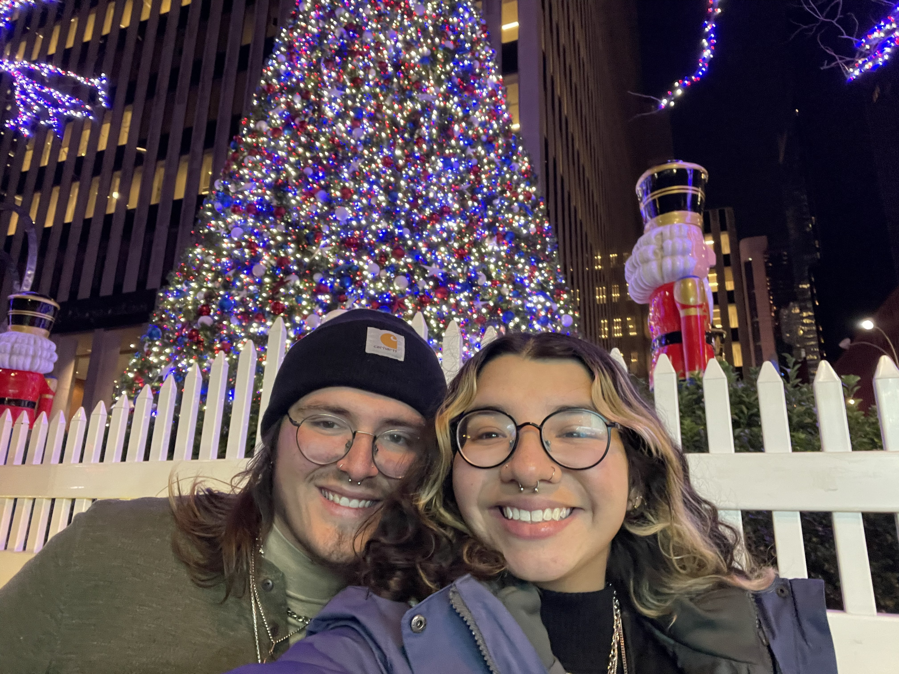
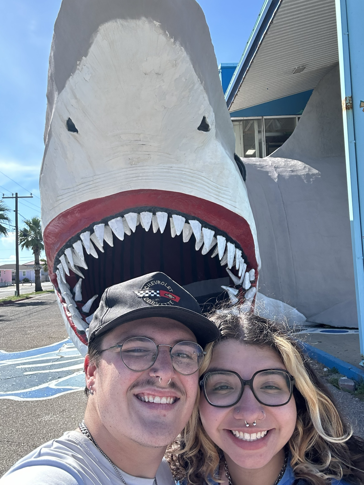
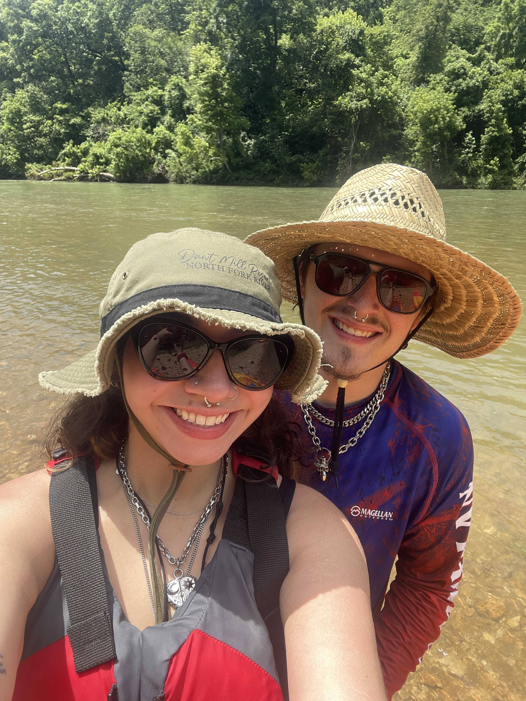
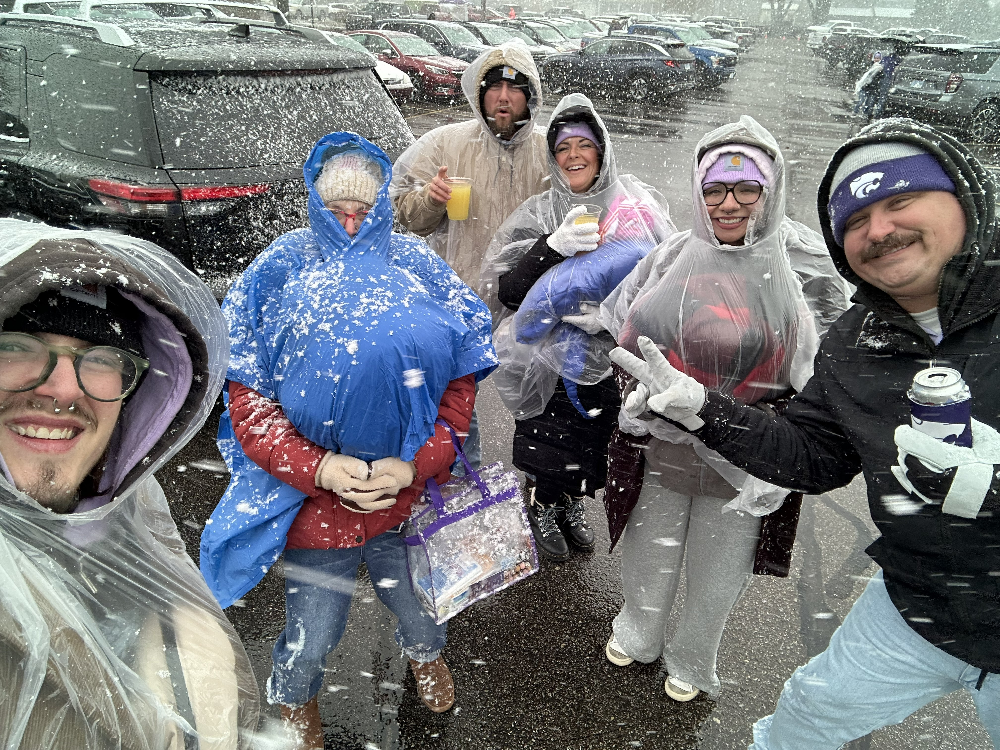
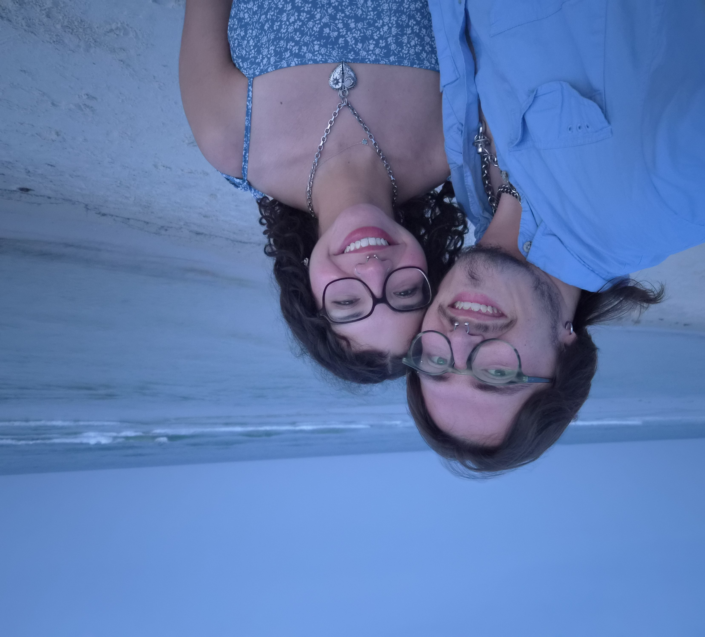

Places I've Traveled
This is a curated collection of places that my fiancee and I have traveled. These are very meaningful to me as it represents all the different adventures we have been on. From urban exploring to kayaking down a river in the middle of the Ozarks, we love traveling and exploring our beautiful country and Earth.

Dallas, Texas 2022
Location | 2022 | Dallas, Texas
This was the first trip that my fiancee (girlfriend at the time) and I went on. It was a trip for an away game with the Goin' Band from Raiderland. I will always hold it dear to me since it was our first time traveling together. We had our band banquet which gave us an excuse to dress up and went on a beautiful date in downtown Dallas.

New York City, New York 2023
Location | 2023 | New York City, New York | Rockefeller Center
This trip was on of my favorites that we took. In 2023, we got the opportunity to march in the Macy's Thanksgiving Day Parade in New York City with the Goin' Band from Raiderland. It was an all expenses paid trip to New York and was an amazing time. We got to explore the city, go to the Central Park Zoo, visit the Empire State Building, and we stayed in the Marriot in Times Square. This was the first time we flew together and it was an amazing trip. The photo is from us standing outside Radio City Music Hall across from the Rockefeller Center with the Christmas tree.

Port Aransas, Texas 2024
Location | 2024 | Port Aransas, Texas
This trip is extremely important to me because it was our first trip alone, just the two of us. It was also my first time going to the Texas coast and the Gulf of Mexico. We spent our time there fishing, swimming, and chilling out on the beach. It was very romantic and will forever be heald dear in my heart. Even though we did not catch anything fishing, it was still an amazing time.

Dora, Missouri 2025
Location | 2025 | Dora, Missouri
This trip was our first time driving across several states together. It was also the first family vacation that my fiancee tagged along for. We drove 13 hours from Lubbock, Texas to Dora, Missouri in one day. We spent our time there kayaking and playing down in the river by the cabin. This trip was when I became the family entertainment with my guitar around the campfire. This trip was extremely fun and we are revisiting next year.

Manhattan, Kansas 2025
Location | 2025 | Manhattan, Kansas
This trip was made specifically to see my sister dancing with the Classy Cats at Kansas State University. We drove from San Antonio, over 14 hours, with my uncle, and completed the trip in one day. We actually were only up there for the weekend and spent more time in the car than out of it. This trip was very fun and I am very happy I was able to make it all the way up there to support my little sister. Of course my fiancee was with me and we had an amazing time, regardless of the snow. We even got to go down on the field and dance with my sister.

Gulf Shores, Alabama 2026
Location | 2026 | Gulf Shores, Alabama
This was the second family vacation that my fiancee came along for. We drove all the way to Gulf Shores overnight and stopped on Bourbon Street in New Orleans for a sample of the night life. We did a lot this trip, but our favorite part was wading in the beautiful clear water of the Golf of Mexico and feeling the super fine white sand between our toes. We also did some boogie boarding and went to the Alabama Zoo.

Palo Duro Canyon, Texas 2026
Location | 2026 | Palo Duro Canyon, Texas
This trip will forever be the most sentimental to me because it is the trip that I proposed to my fiancee. We hiked 7 miles on the lighthouse trail and I proposed at the top. We had the entire top of the lighthouse structure to ourselves and it was incredibly beautiful, secluded, and romantic. Even though it was just a day trip, I will remember every single second of it. Especially how nervous I was leading up to it.